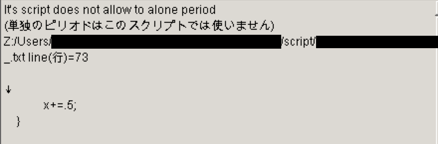

Site Navigation- Return to Home
- ph3 Tutorial Index
- Danmakufu Wiki
- Ph3 Function List (DNH Wiki)
- ph3 Style Guidelines
Function Reference- Function List
- General Functions
- Object Functions
- Player Script Fxns
- Private Script Fxns
- Danmakufu Events
Lesson Resources
Tutoriales de Danmakufu ph3 de Sparen Lección 4 - Sintaxis y estructuras de Danmakufu (Parte 1)
El video para esta lección es la entrada de AJS para el concurso de LOCAA 5. Ganó el primer lugar por obvias razones que se ven en el video. En mi opinión, este es uno de los mejores scripts de bosses dobles jamás hecho en Danmakufu ph3, especialmente considerando que, si bien AJS tiene una vasta experiencia en Danmakufu, este era su primer script hecho en ph3.
Tabla de contenidos
- Parte 1: ¿Qué se verá en esta lección?
- Parte 2: ¿Qué son los comentarios y cómo se usan?
- Parte 3: ¿Qué es una variable?
- Parte 4: ¿Qué son las constantes?
- Parte 5: ¿Qué operaciones matemáticas puedo utilizar en Danmakufu?
- Parte 6: ¿Qué son las variables locales y globales?
- Examen: Operaciones matemáticas
- Examen: Decimales
- Parte 7: ¿Qué son los caracteres? y ¿puedo cambiar el tipo de variable?
- Parte 8: ¿Qué son los strings (cadenas)?
- Parte 9: ¿Qué son los arrays?
- Examen: Strings y arrays
- Fuentes y recursos externos
Parte 1: ¿Qué se verá en esta lección?
En esta lección veremos lo siguiente:
- Comentarios
- Variables y declaración de variables
- Constantes
- Operaciones matemáticas
- Caracteres
- Strings
- Arrays de una sola dimensión
En la siguiente lección cubriré los siguientes temas:
- Booleanos y operaciones booleanas
- Loops
- Funciones
- If, If-Else y sentencias de casos alternativos
- Tasks y yield;
- Uso del punto y coma
Ten en cuenta que el contenido de esta página está basado parcialmente en el tutorial de Danmakufu ph3 de CK Crash y tal vez sea una opción mejor para aprender cómo se comporta el Danmakufu con las variables y demás.
Parte 2: ¿Qué son los comentarios y cómo se usan?
//Este es un comentario.
//En Danmakufu, todo lo que está precedido por dos barras (//) es un comentario de línea.
//Por ende, todo lo que esté después de un // en una línea, no será tratado como código y será ignorado.
/*Esto también es un comentario*/
//Comentarios dentro de /* y */ son los llamados 'comentarios en bloque'.
/*Los
comentarios
en bloque
pueden
ocupar
múltiples
líneas
*/
//Los comentarios de línea son muy buenos para dar descripciones sobre lo que hacen ciertos códigos.
//Los comentarios de línea también son útiles para comentar código que no quieras usar en ese momento, como por ejemplo código de depuración.
/*Los comentarios en bloque son útiles para sacar de la ejecución largos bloques de código para testear ciertas partes del script*/
/*Los comentarios en bloque también sirven guardar información descriptiva sobre funciones y demás*/Ten en cuenta que los códigos que aparecen en estos tutoriales, los comentarios se usarán con frecuencia para describir ciertos conceptos importantes y el funcionamiento de algunas líneas de código, así como también para muchas otras cosas. Lo mismo para los demás tutoriales.
Parte 3: ¿Qué es una variable?
En ciencias de la computación, una variable no es exactamente lo mismo que en matemática. En ciencias de la computación, es posible hacer que una variable cambie su valor. Una variable almacena información, ya sea una constante, un string o un ID. Hay variables globales y locales, ambas serán descriptas brevemente. Se puede pensar en una variable como un contenedor de algún tipo de información.
let x; //Este código declara la variable llamada x.
x = 5; //Ahora el valor de x fue fijado a 5.
x = 3; //El valor de x fue sobrescrito y ahora es 3.
let y = x; //Hemos creado una nueva variable y, cuyo valor actual es el de x, que es 3.
x = 4; //x es ahora 4, pero y mantiene su valor de 3.Para futuras referencias, una instrucción simple, como let x;, se llama sentencia (statement), y las sentencias deben terminar con un punto y coma.
Ahora consideremos el siguiente código.
let x; //Este código declara la variable llamada x.
let x = 5; //Esto intenta declarar una variable llamada 'x' y fijarla con un valor de 5.El código de arriba, desafortunadamente, causará un error porque ¡una variable x ya existe! No puedes declarar algo que ya existe (hay excepciones que veremos más adelante cuando hablemos de variables globales y locales).
Ahora consideremos el siguiente código.
x = 5; //Este código le dice a la variable x que cambie su valor a 5.
let x = 3; //Declara una variable x almacenando un valor de 3.El código de arriba, desafortunadamente, también causará un error. Esta vez, el error aparece porque estás tratando de usar una variable que aún no ha sido declarada. En este casi, la línea x = 5; hace referencia a una variable x que en este punto en el tiempo todavía no existe. Debes declarar una variable antes de poder usarla.
Como nota final sobre las variables, se puede usar real en vez de let, pero let es usado más comúnmente. Funcionalmente son exactamente lo mismo.
Parte 4: ¿Qué son las constantes?
Las constantes son identificadores que no cambia mientras un programa se esté ejecutando, en contraposición a las variables. Por convención, los nombres de las constantes van todas en mayúscula. Por ejemplo, las constantes incluidas en el Danmakufu son, entre otras, BLEND_ADD_ARGB y EV_GRAZE, etcétera. La mayoría de estas vienen por defecto o son usadas en los shotsheets.
Si decides crear tus propias constantes, asegúrate de que su nombre esté en MAYÚSCULA y que no cambias el valor en lo absoluto. Por ejemplo, let CIRNO = 9;
Parte 5: ¿Qué operaciones matemáticas puedo utilizar en Danmakufu?
let x;
x = 3 + 5; //x ahora vale 8.
x=x+3; //x ahora vale 11. Notar que los espacios en blanco no importan.
x++; //Esto equivale a x = x + 1. Incrementa en 1 el valor de x. Muy útil para contadores (counters).
x--; //Como arriba, pero decrece el valor de x de a 1.
let y = 6;
y = y * 2; //y ahora es igual a 12.
y = y / 3; //y ahora es igual a 4.
y = y ^ 2; //y es elevado al cuadrado y ahora vale 16.
y = y % 2; //Ya que el resto (modulus) cuando y / 2 es igual a 0, y ahora vale 0.Ten en mente que el Danmakufu usa el orden de operaciones y que la raíz cuadrada equivale a elevar el número a la 1/2. Abajo hay algunos ejemplos y notas sobre el sistema de ángulos usados por el Danmakufu, así como también algunos atajos más.
let angleT = 30; //Danmakufu usa grados.
angleT += 360/5; //angleT incrementó 72 y ahora vale 102. 'var += n' es un atajo para 'var = var + n'
angleT *= -1; //angleT ahora es -102, usando el mismo proceso de arriba.
//También hay atajos para las operaciones matemáticas de -= y /=
let x = (30 + angleT) * 3; //Usa paréntesis para el orden de operaciones. x ahora vale -216.Sin embargo, presta atención a lo siguiente.
let y = (55)(33); //Esto no funcionará.
let y = 55 * 33; //Esta es la forma correcta de multiplicar dos números.También ten en cuenta que no puedes hacer operaciones con variables que no existan.
let y = 30;
let z = x * y; //Causará un error ya que x todavía no ha sido declarada.Y finalmente, una de las cosas más molestas que causará error.
let y = 30;
y += .5;¿El error? Bueno, Danmakufu no entiende los puntos solos. Tienes que usar 0.5 en lugar de .5 para que Danmakufu lo reconozca y no cause error.
Parte 6: ¿Qué son las variables locales y globales?
Ahora, para la explicación de variables locales y globales, volveremos al código usado en la lección anterior.
Clic aquí para abrir una masiva cantidad de código en una ventana separada
Las variables globales son variables declaradas fuera de tasks, funciones y rutinas. Por lo general se declaran entre el header y @Initialize o bien @Event (el que esté primero). Una variable declarada aquí, se puede hacer referencia y cambiarla en cualquier otra parte del script. Por ejemplo, en el código proveído, objEnemy y frame son declaradas como variables globales. En @MainLoop, se hace referencia a frame y se cambia varias veces. Solo recuerda que los cambios hechos a las variables globales en diferentes ubicaciones afectarán a todas las ubicaciones donde fueron usadas, así que es recomendable que cambies una variable global solo en una rutina/función/task y en ningún lado más. Para contadores, sugiero usar @MainLoop.
En @MainLoop, el loop empieza con la declaración de ex y ey. Estas son variables locales – solo existen dentro de @MainLoop, y una vez que @MainLoop termine una vuelta, estas se resetean. Esto quiere decir que se actualizan cada frame dada la naturaleza del @MainLoop.
Las variables locales también son creadas en loops ascendentes y descendentes, y los parámetros de las funciones y tasks también son variables locales, excepto que esas variables locales tengan un atributo especial – sobrescribirán las variables globales con el mismo nombre cuando sean llamadas en un loop, función o task dado. Esto será explicado en las secciones correspondientes.
Por último, puedes declarar variables locales de la siguiente forma:
local{
let x;
}Sin embargo, muy pocos scripters usan esto, y no hace falta que lo sepas a menos que estés tratando de descifrar el código de alguien más.
Para dar un ejemplo más concreto de variables locales y globales, observa abajo. Ten en cuenta que las otras estructuras usadas aquí serán explicadas en esta lección y la siguiente.
let x = 1;
@MainLoop {
let y = 2 * x;
ascent(i in 0..y){
let j = i + x/y;
}
//No se puede usar i o j aquí.
}
//No se puede usar i, j o y aquí.En el código de arriba, x es una variable global y se puede usar en cualquier lugar del script. Como resultado, dentro de @MainLoop podemos usar x. Sin embargo, la variable y es local dentro de @MainLoop y no se puede usar fuera de @MainLoop. Sin embargo, se puede usar dentro del loop ascendente ya que es global en el ámbito (scope) del dicho loop. Como tal, i y j, que son locales con respecto al loop, pueden acceder a x e y, pero no pueden ser usadas fuera del loop ascendente (ascent).
Examen: Operaciones matemáticas
1) ¿Cuál es el valor de x después de ejecutar el siguiente código?
let x = 8;
x += 5;
x = x ^ 2;
x -= 3;2) ¿Cuál es el valor de x después de ejecutar el siguiente código?
let x = 8;
let y = 6;
x = x * (y - 3);
x += 9;Examen: Decimales
Nitori está compartiendo su amor por los decimales cuando recibe el siguiente error:
¿Por qué aparece este error?
Parte 7: ¿Qué son los caracteres? y ¿puedo cambiar el tipo de variable?
En ciencias de la computación, un carácter es una letra, número o símbolo. Los caracteres se indican usando comillas simple, así: let x = 'a';
En Danmakufu, prácticamente no usarás caracteres – sino que utilizarás strings, el tema de la siguiente parte. Sin embargo, es un buen momento para mostrar uno de los conceptos más importantes en Danmakufu (y en ciencias de la computación en genera) – tipos de variables.
let x = 6; //x es un contenedor que almacena al número entero 6.
let y = '$'; //y es un contenedor que almacena al carácter $.
let z = '3'; //z es un contenedor que almacena al carácter 3.
x = '3'; //Este código causaría un error.Entonces, ¿por qué no se puede cambiar el valor de la variable x de 6 a '3'? Bueno, eso es porque primero le asignaste un valor a x, conteniendo un número entero. Y luego intentaste asignarle un carácter. Esto no está permitido, ya que x se ha configurado para aceptar solo números. '3' no es un número en Danmakufu – es un carácter. En otros lenguajes, los caracteres puede que tenga un número entero equivalente y admitan la adición, pero sugiero que simplemente no intentes hacer esto ya que puede causar resultados inesperados.
Pero ¿qué tal si quieres definir x = '33';? Bueno... eso no funcionará, y lo veremos en la próxima parte.
Parte 8: ¿Qué son los strings (cadenas)?
Los strings tienen muchos más usos que los caracteres. Los strings pueden ser usados para almacenar frases, rutas de archivo y más, y se denotan usando comillas dobles. Ten en cuenta que si usas comillas inteligentes (“”), Danmakufu no funcionará. Abajo se muestran ejemplos de strings
let randomstring = "Este es un string random.";
let spellname = "Fire and Water Sign \"Geysers of the Deep\"";
let imgRumia = GetCurrentScriptDirectory() ~ "img/imgrumia.png";
let desc = "Esta es una spellcard hecha por un scripter desconocido.[r]Por favor juégala bajo tu propio riesgo.";Obviamente, los strings almacenan mucha más información que un carácter y son mucho más útiles. Puedes incluir números en los strings, como por ejemplo "3 + 6 = Cirno", así como también otras cosas. En los cuatro ejemplos de arriba, tenemos tres casos especiales que merecen especial atención – el carácter de escape en el nombre de la spell, la concatenación del string de imgRumia y el [r] de desc.
Primero, el carácter de escape \ (contrabarra). En la mayoría de los lenguajes de programación y scripting, \ se usa como el carácter de escape y, si está pegado a ciertos símbolos, tendrá una función especial. Por ejemplo, en la mayoría de los lenguajes, \n representa un salto de línea (aunque en ph3 no, discutiremos esto después), \t indica una tabulación y, más específicamente en este escenario, \" representa unas comillas dobles ". Ya que los strings empiezan y termina con comillas dobles, poner comillas dobles dentro de un string requiere un método alternativo, el cual es proveído por \", que no será leído como el cierre del string, sino como un símbolo que, cuando el string sea mostrado en pantalla, serán comillas dobles en vez de \". Este es el método más simple para incluir una comilla doble en un string. Muy útil para los nombres de spells, dependiendo del formato que uses.
Lo siguiente es la concatenación. Para los propósitos de este tutorial, ten en cuenta que GetCurrentScriptDirectory() devuelve un string.
let imgRumia = GetCurrentScriptDirectory() ~ "img/imgrumia.png";Aquí tenemos un string ~ string. ¿Qué hace esto? Esto se denomina concatenación de strings, y combina los dos strings. Por ejemplo:
let string = "String1" ~ "String2"; //El string ahora es "String1String2"Mayormente esto se usará para rutas asignadas a variables. También se vuelve útil para otras cosas.
Y finalmente, [r]. [r] es nuevo en el ph3 (0.12m usaba \n). [r] denota una nueva línea y funciona como salto de línea. Por consiguiente, let string = "uno[r]dos";, si se mostrase en pantalla, se vería así:
uno
dosMuy útil en #Text, diálogos y otra cantidad de cosas.
Parte 9: ¿Qué son los arrays?
Lo último que discutiremos en esta lección son los arrays, que son, esencialmente, contenedores que almacenan múltiples cosas del mismo tipo. Por ejemplo, un string es un array de caracteres. En Danmakufu, los arrays se declaran así:
let array = []; //Declara un array vacío.
let array2 = [3, 4, 6, 8]; //Declara un array de números de 4 espacios (length), almacenando 3, 4, 6 y 8.
let array3 = GetAllEnemyID(); //Declara un array que contiene los IDs de todos los object enemy actualmente existentes.Ten en cuenta que una vez que declaras un array, el nombre de la variable no puede ser usada para ninguna otra cosa más que para que un array. No se puede hacer lo siguiente:
let array = []; //Declara un array vacío.
array = "CIRNO ATACA DE NUEVO";La variable 'array' ya fue usada para un array y no puede ser usada para nada más.
Los arrays son bastante útiles, pero por supuesto, necesitas meter y obtener datos de ellos. Como tal, hay formas de meterle cosas a los arrays, remover cosas y obtener los valores en ellos alojados.
Primero discutiremos cómo agregarle cosas a los arrays. Usando la concatenación ~, se puede hacer lo siguiente:
let array = [3, 6]; //Defina un array conteniendo los números 3 y 6.
array = array ~ [4]; //array ahora es [3, 6, 4].Ten en cuenta que debes incluir el ítem que quieres agregar, escrito como array – en esencia, estás combinando dos arrays. También puedes usar concatenate(array1, array2) para concatenar dos arrays, aunque el método con el ~ es mucho más simple. Otro ejemplo, esta vez mostrando cómo incluir el valor de una variable en un array:
let array = []; //Declara un array vacío.
let string = "Test";
array = array ~ [string]; //array ahora es [string], cuyo valor es "Test".Ahora vamos a discutir indexados. Puedes obtener el largo de un array usando length(nombredelarray). Pero primero lo primero – el primer elemento de un array está indexado como 0, no 1.
let dnh = ["ExPorygon", "Naut", "Trickysticks", "AJS"]; //Declara un array de largo 4 y contiene los nombres de scripters de Danmakufu.
let lengthdnh = length(dnh); //4
let scripter = dnh[2]; //Busca el elemento con índice 2 – "Trickysticks".
let scripter2 = dnh[2..4]; //Obtiene un array con los elementos en el índice desde el 2 hasta el 3 – ["Trickysticks", "AJS"].
let scripter3 = dnh[lengthdnh]; //Causa un error porque el cuarto índice no existe.
Una vez que entiendes que se empieza a contar de 0, no es tan malo. Además, nota los dos puntos para obtener un subarray a partir del array inicial. El nuevo array incluye el elemento del índice indicado a la izquierda de los dos puntos, pero no el de la derecha. Veremos esto con más detalle cuando veamos loops ascendentes. La función slice() también hace lo mismo. Ahora consideremos el siguiente array:
let array = [3, 6, 9, 12, 9, 9, 12];¡Vamos a operar con el array de arriba!
array = [3, 6, 9, 12, 9, 9, 12];
array[4] = array[4] - 1;Ahora el array se verá así:
[3, 6, 9, 12, 8, 9, 12]Lo que hemos hecho es lo siguiente: Indexamos un array, obteniendo una referencia al valor contenido en ese índice y luego ejecutamos una operación en él (- 1). Así es como operamos con el contenido de los arrays.
Por supuesto, también hay otras operaciones (algunas significantemente más complicadas), pero por ahora finalizaremos con la eliminación de índices. Es bastante simple.
array = [3, 6, 9, 12, 8, 9, 12];
array = erase(array, 5); //Borra el quinto índice del array 'array'.Luego de ejecutar la función erase() sobre el array, nos queda el siguiente array:
array = [3, 6, 9, 12, 8, 12];Como nota final, ya que los strings son arrays de caracteres, se pueden indexar strings de la misma forma que indexas arrays. El tutorial de CR Crash (ver el link en la parte 1) incluye el truco booleano, pero discutiremos booleanos en la siguiente lección. También hay arrays 2D y 3D (etc), pero no vamos a lidiar con ellos por ahora – tienen un uso limitado hasta que intentes organizar CommonData y hacer aparecer las balas en cierta forma, etcétera.
Examen: Strings y arrays
let spellsigns = ["Fire Sign", "Water Sign", "Moon Sign"];1) What is the value of spellsigns[1]?
Luego hacemos lo siguiente:
spellsigns = spellsigns ~ ["Magical Storm"];2) ¿Cuál es el valor de length(spellsigns) después de que el código haya sido ejecutado?
Ahora hacemos lo siguiente:
erase(spellsigns, 0);3) ¿Cuál es el valor de spellsigns[0] luego de que el código haya sido ejecutado?
Y ahora hacemos let str = spellsigns[2]; //"Magical Storm"
4) ¿Cuál de las siguientes opciones haría que al mostrar en pantalla el valor de str, aparezca como Magical Storm "Flurry of Stars"?
Fuentes y recursos externoss
[ 弾幕風 PH3 Tutorial ] Introduction to Danmakufu (Helepolis)
-->Debería dar una alternativa y ejemplos visuales a los contenidos de esta lección.
Danmakufu for Easy Modos by CK Crash (CK Crash)
-->Ya que este tutorial fue usado como base para el mío, recomiendo enormemente que lo leas si todavía no lo has hecho.